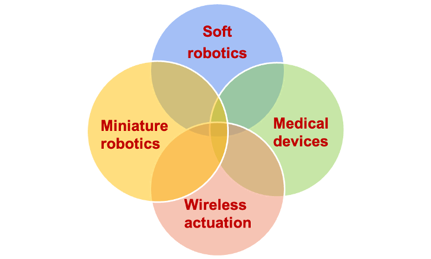

Please visit our new group webpage.
 The research of Dong Lab will focus on three aspects.
- The design, manufacture and control of miniature soft robots, and their applications in minimally invasive medicine, biomechanics and microfluidics.
- The design, manufacture and control of miniature swarm robots, and their applications in biomedicine and biomechanics.
- The modeling, design, manufacture and control of intelligent soft materials and devices based on mechanics model and machine learning.
Group News
-
(April 2022) Dr. Dong hosted the department seminar talk by Prof. Wei Gao from Caltech!
-
(April 2022) An invited seminar talk is given by Dr. Dong on shape-morphable wireless miniature robots in the Department of Mechanical Engineering, Georgia Tech, Atlanta, US.
-
(April 2022) An invited talk is given by Dr. Dong in the workshop “Surgical Robotics: the next generation” at the 2022 International Symposium on Medical Robotics, Georgia Tech, Atlanta, US.
-
(April 2022) Our paper titled “Wireless Soft Millirobots for Climbing Three-dimensional Surfaces in Confined Spaces” has been accepted by Science Advances!
-
(April 2022) We received a pilot grant award from Vanderbilt Institute of Nanoscale Science and Engineering!
-
(March 2022) Dr. Dong co-hosted a webinar by Prof. Ryan L. Truby from Northwestern University on “Designing Robotic Materials from Sensorized Soft and Architected Matter”.
-
(March 2022) Our paper titled “Creating three-dimensional magnetic functional microdevices via molding-integrated direct laser writing” has been accepted by Nature Communications!
-
(March 2022) Congratulations that our lab member Andrew Haworth received an Undergraduate Summer Fellowship from Vanderbilt Institute for Surgery and Engineering!
-
(Feb. 2022) Dr. Dong hosted the department seminar talk by Prof. Giovanni Traverso from MIT!
-
(Feb. 2022) We are looking for strong candidates to join for the PhD and MS program at ME of Vanderbilt. Please see “Opportunity” for more details.
-
(Feb. 2022) We are looking for strong undergraduates for summer research. Please see VUSE Summer Research Program for application details.
-
(Feb. 2022) I am co-organizing a special issue on Nano and micro swarm robotics in Swarm Intelligence as a guest editor together with colleagues Prof. Josh Bongard, Prof. Sabine Hauert, and Prof. Metin Sitti. For the details of this special issue, please see the call-for-paper information via link.
-
(Jan. 2022) I am officially affiliated with the Vanderbilt Insitute for Surgery and Engineering, VISE link.
-
(Nov. 2021) I am co-organizing a journal special issue on “Magnetic Microrobots for Biomedical Applications”. You are welcome to submit your work to Micromachines.
-
(Oct. 2021) I am joining the Department of Mechanical Engineering, at Vanderbilt University, Nashville, TN, US in January 2022 as an Assistant Professor. We are actively recruiting PhD students and Postdoctoral researchers. Please see “Opening” for more details.